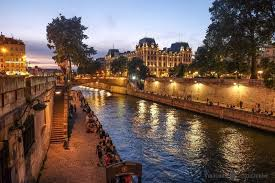
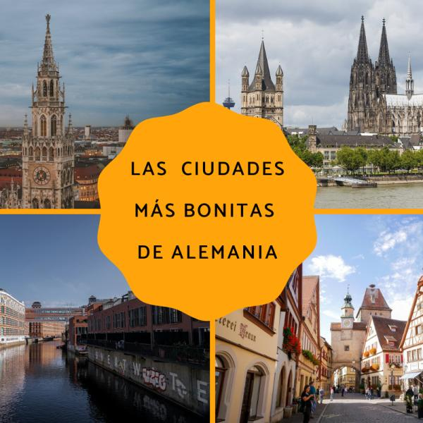
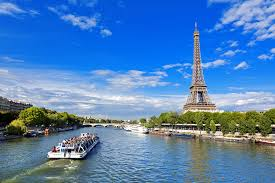

|  | |
|
|  |
AlemaniaDescubre la riqueza cultural, la historia fascinante y la belleza natural de Alemania desde los majestuosos castillos Alemania te espera con los brazos abiertos en el maravillosolugar de Rotemburgo. |
ParísParís, la capital de Francia, es una importante ciudad europea y un centro mundial del arte, la moda, la gastronomía y la cultura. Su paisaje urbano del siglo XIX está entrecruzado por amplios bulevares y el río Sena. Aparte de estos hitos, como la Torre Eiffel y la catedral gótica de Notre Dame del sigl o XII, la ciudad es famosa por su cultura del café y las tiendas de moda de diseñador a lo largo de la calle Rue du Faubourg Saint-Honoré Francia te espera con los brazos abiertos en el maravillosolugar de Canal de Saint-Martin. |
 |

|
Tokio(japon)Tokio, la ajetreada capital de Japón, mezcla lo ultramoderno y lo tradicional, desde los rascacielos iluminados con neones hasta los templos históricos. El opulento santuario Shinto Meiji es conocido por su puerta altísima y los bosques circundantes. El Palacio Imperial se ubica en medio de grandes jardines públicos. Los distintos museos de la ciudad ofrecen exhibiciones que van desde el arte clásico (en el Museo Nacional de Tokio) hasta un teatro kabuki reconstruido (en el Museo Edo-Tokyo). |